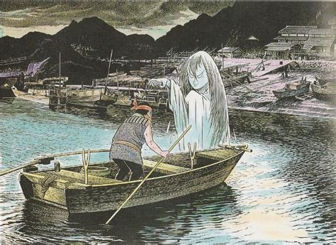

Funayūrei (船幽霊 or 舟幽霊, literally "boat spirit") are spirits (yūrei) that have become vengeful ghosts (onryō) at sea. They have been passed down in the folklore of various areas of Japan. They frequently appear in ghost stories and miscellaneous writings from the Edo Period as well as in modern folk customs. In Yamaguchi Prefecture and Saga Prefecture, they are called Ayakashi
Funayūrei are ghosts believed to use hishaku (ladles) to fill boats with water and make them sink. They are said to be the remnants of people who have died in shipwrecks and are attempting to cause humans to join them. According to legends, there are various methods that can be used to protect from the harm they inflict, such as throwing onigiri into the sea or preparing a hishaku with its bottom missing. They're also called mōjabune (亡者船), bōko, or ayakashi depending on the region. Umibōzu, colossal giants encountered far out at sea, are sometimes considered to be a type of funayūrei rather than a type of yōkai.
Their appearance as depicted in legends varies widely depending on the area. There are stories that speak of ghosts that appear above water, of boats that are themselves ghosts (ghost ships), of ghosts that appear on human-occupied ships, or of any combination of the above. They are described as appearing like umibōzu or as an atmospheric ghost light. There are many legends of funayūrei at sea, but they have also been described as appearing in rivers, lakes, and swamps of inland areas. In Kōchi Prefecture, the kechibi, a type of onibi, is also sometimes seen as being a type of funayūrei. They often appear in rainy days, as well as nights on a new or full moon, and on stormy nights and foggy nights. When it appears as a boat, the funayūrei itself glows with light, so that it is possible to confirm its details even at night. Also, by operating on the sixteenth day of Bon, the dead would attempt to approach the side of the ship and sink it. Also, on a very foggy evening, by making the boat attempt to run, a cliff or a boat without a pulley would appear, and since getting startled and attempting to avoid it would result in capsizing and getting stranded on a reef, it would be no problem to simply push on forward, making it disappear naturally. Other than attempting to sink ships, in the town of Ōtsuki, Hata District Kochi Prefecture, they are said to make the boat's compass malfunction, and in the Toyoma Prefecture, fishing boats that travel to Hokkaido get turned into a funayurei, causing the crew to hang themselves. In Ehime Prefecture, when one encounters a funayurei, if one tries to avoid it by changing the boat's route, the boat runs aground. Also, in the past, to avoid shipwrecks firing bad weather, people would light a bonfire on land. However, a funayurei would light a fire on open sea and mislead the boatmen, and by approaching the fire, one would get eaten by the sea and drown. There are also various legends about how to drive away funayurei depending on the area, and in the Miyagi Prefecture, when a funayurei appears, they would disappear if one stops the ship and stares fixedly at the funayurei for a while.It is also told that it is good to stir up the water with a stick. There are also various theories that it would be good to throw things into the sea, and in Kōzu-shima, it would be flowers and incense, incense sticks, dango, washed rice, and water, in Kochi Prefecture, it would be ashes and 49 rice cakes,and in Otsuki, Kochi, it would be summer beans, in Nagasaki Prefecture, it would be woven mats, ashes, and burnt firewood. Also, in Kochi Prefecture, it is said to be possible to drive funayurei by saying "I am Dozaemon (わしは土左衛門だ)" and asserting to be one of the funayurei.In Ehime, one is able to disperse the funayurei by lighting a match and throwing it. Classics "Funayūrei" from the Ehon Hyaku Monogatari by Takehara Shunsen In the collection of fantastic stories, the Ehon Hyaku Monogatari from the Edo period, the funayurei that appear on the western sea are departed souls from the Taira clan. It is known that the Taira clan came to ruin in the Battle of Dan-no-ura, but in the open sea between Dan no Ura and Mekari in the Kanmon Straits (Hayamoto, 早鞆), a funayurei wearing armor and helmet would appear, say "give me a bucket", and would cling to the boat. By lending a hishaku, it would pour water onto the boat, so when crossing this sea on a boat, one would thus prepare one with its bottom open, and thus stave off the funayurei. Once, there was a Buddhist priest who, feeling pity for the spirit, performed a rite, causing it to go away. Genrin Yamaoka, an intellectual from the Edo period, commented on funayurei that appear as balls of fire or ghosts at sea. Referring to Zhu Xi and the Cheng-Zhu school, he brought up several examples of departed souls that died with resentment and remained even after carrying out their revenge, and concluded, "even by seeing something from 10 people, by sometimes going along with reason, you can also sometimes see it in ancient Chinese books (かやうの事つねに十人なみにあることには待らねども、たまたまはある道理にして、もろこしの書にもおりおり見え待る)". Although it is not possible to get a hold of smoke with one's hands, by accumulating it and staining one's hand, it is possible to take it into one's hands. The spirit (気, ki) is the beginning of one's nature, and when the spirit stagnates, the ones that create a form and produce a voice are called yurei. In the first place, the stagnated spirits of the ghosts desire to fall, and disappear. In 1954, after the Toya Maru accident, the largest marine accident to occur after the war, the ferryboats that went on commission after the accident were discovered to have a strange scar on their propeller, providing an example of where rumors started to spread about how the victims of the accident turned into funayurei and dug claws into the propellers. This funayurei appears in sea and on land, and in Nanaehama, Hokkaido, there is a rumor that at midnight, a female would appear completely wet riding in a taxi, who would disappear once one reaches the destination, and who was rumored to be the ghost of Toya Maru. Also, in Aomori Station, the staff members who slept in the night duty room would wake up at the sound of banging on the glass window, and would see the hand of the completely wet female on the other side, got startled that "Toya Maru's victims were pleading for help," and the next morning, there would be a promissory note remaining on that glass window. Also, in 1969, in the sea in Kanagawa Prefecture, one would observe a white human figure, hear a voice saying "Please give me a hishaku," and it was said that the shipwrecked members of the university's yacht club were wanting to bail water.